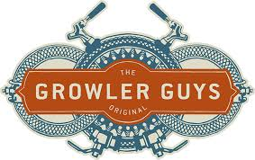
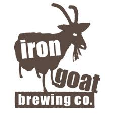
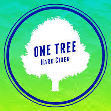

|
Growler Guys
Over 40 drinks on Tap!

|
Following in the footsteps of Europeans and East coasters, the Growler Guys opened its doors in early 2012.
Word traveled fast among craft beer enthusiasts and general folks who wanted to test the concept.
The concept is pretty cool: Our first growler fill station in Bend, Oregon at the Stop and Go Shell gas station
has 45 of the most varied local craft beer favorites, and not-so-local brews, on tap for you to choose from and
take home in either a 32-oz or 64-oz growler.
|
|
With humble beginnings in a locked shack hidden in the middle of the woods, Iron Goat has always kept a personal,
hands-on approach to their beer. Constant experimentation with hop choices and seasonal ingredients has kept their
passions strong. In an effort to ensure flavors are at their best, they constantly taste test the batches.
Some days that's all they do, because precisionishness is a priority. Iron Goat has crafted over 150 distinct beers
keeping these values close, and their pint glasses closer.
|
Iron Goat
Named after the Iron Goat

|
|
One Tree
Best Ciders in Spokane!

|
One Tree Hard Cider is made from locally grown ingredients right here in Washington State. When we began
this journey we wanted to use a wide variety of ingredients and flavors in our hard ciders to show that it
starts with apples, but it doesn't end there! Whether you like your cider sweet or tart, you'll find a One
Tree Hard Cider just for you.
|